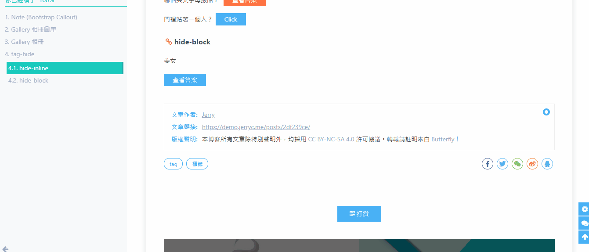
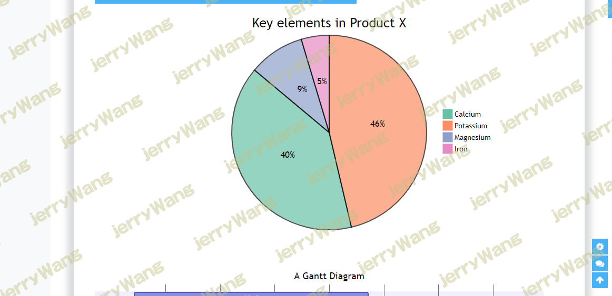

Note
用法
1
2
3
4
5
6
7
8
| {% note [class] [no-icon] %}
Any content (support inline tags too.io).
{% endnote %}
[class] : default | primary | success | info | warning | danger.
[no-icon] : Disable icon in note.
All parameters are optional.
|
例如
1
2
3
4
5
6
7
8
9
10
11
12
13
14
15
16
17
18
19
20
21
22
23
| {% note default %}
default 提示块标签
{% endnote %}
{% note primary no-icon %}
primary 提示块标签
{% endnote %}
{% note success %}
success 提示块标签
{% endnote %}
{% note info %}
info 提示块标签
{% endnote %}
{% note warning %}
warning 提示块标签
{% endnote %}
{% note danger %}
danger 提示块标签
{% endnote %}
|
primary 提示块标签；no-icon 不显示icon
tag-hide
如果你想把一些文字、内容隐藏起来，并提供按钮让用户点击显示。可以使用这个标签外挂。
写法：
inline 在文本里面添加按钮隐藏内容，只限文字
( content 不能包含当引号，可用 ')
1
| {% hideInline content,display,bg,color %}
|
- content: 文本内容
- display: 按钮显示的文字 (可选)
- bg: 按钮的背景颜色 (可选)
- color: 按钮文字的颜色 (可选)
block 独立的 block 隐藏内容，可以隐藏很多内容，包括图片，代码块等等
1
2
3
| {% hideBlock display,bg,color %}
content
{% endhideBlock %}
|
hideInline
1
2
3
| 哪个英文字母最酷？ {% hideInline 因为西装裤(C装酷),查看答案,#FF7242,#fff %}
门里站着一个人? {% hideInline 闪 %}
|
hideBlock
1
2
3
4
5
6
7
8
9
10
11
12
| {% hideBlock 查看答案 %}
{% gallery %}


{% endgallery %}
{% endhideBlock %}
|

mermaid
使用 mermaid 标签可以绘製 Flowchart（流程图）、Sequence diagram（时序图 ）、Class Diagram（类别图）、State Diagram（状态图）、Gantt（甘特图）和 Pie Chart（圆形图），具体可以查看 mermaid 文档
写法
1
2
3
| {% mermaid %}
内容
{% endmermaid %}
|
例如
1
2
3
4
5
6
7
8
| {% mermaid %}
pie
title Key elements in Product X
"Calcium" : 42.96
"Potassium" : 50.05
"Magnesium" : 10.01
"Iron" : 5
{% endmermaid %}
|

 微信
微信 支付宝
支付宝